Two Independent Robot Arms Coordinate to Lift, Move, and Lower a Tray with a Water-Filled Glass — Sharing Only a Camera, Exchanging Zero Messages
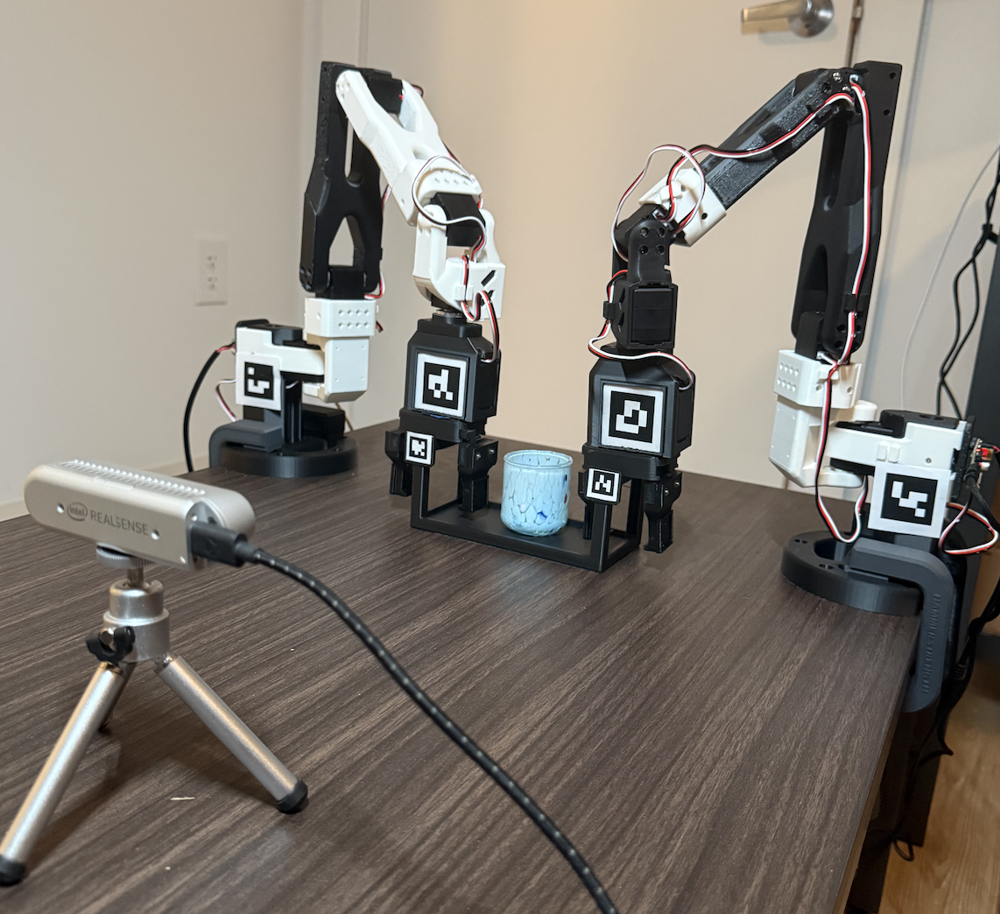
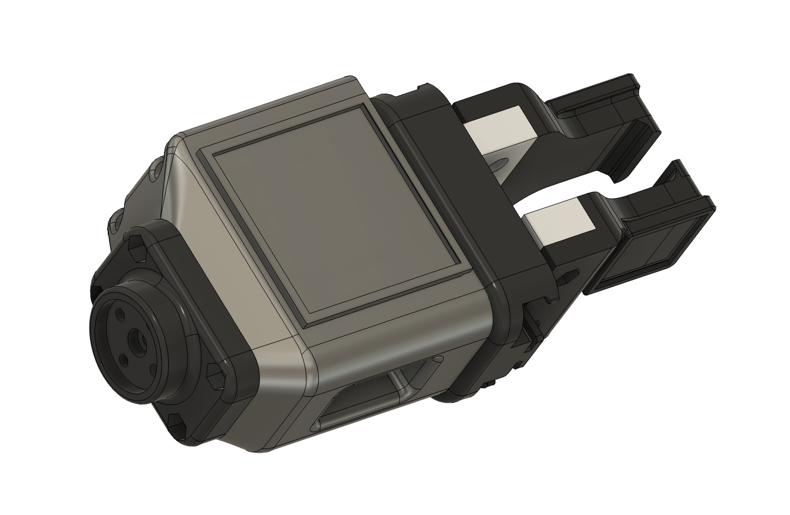
Custom End Effector
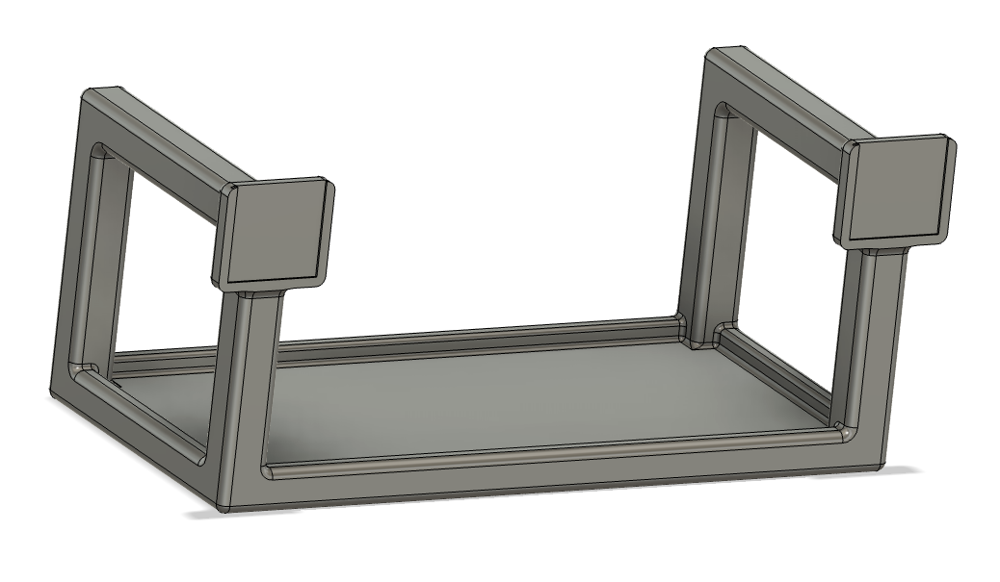
Custom Tray
We present a decentralized algorithmic approach to bimanual tray-lifting with two independent LeRobot SO-101 robot arm manipulators. The two arms share only a single RGB camera stream and exchange no direct messages of any kind. Each arm runs in its own thread and issues motor commands from a scene representation it builds for itself from AprilTag markers on the tray, grippers, and arm bases.
Coordination emerges implicitly from both arms observing the same scene and mapping observations to joint commands through the same pipeline — a pre-fit polynomial motion map from base-frame planar coordinates to joint angles, a shared phased procedure, and closed-loop visual servoing. The full pick–move–place sequence executes reliably on physical hardware with a water-filled glass on the tray.
The base platform is the open-source LeRobot SO-101 — an inexpensive 5-DoF follower arm with position-controlled Feetech STS3215 servos exposed through HuggingFace LeRobot’s SOFollower bus interface. The stock design wasn’t immediately suited for bimanual tray work, so we modified the end-effector, the base, and the bicep, and designed a custom tray and AprilTag layout from scratch. All custom parts were CAD’d in Fusion 360 and 3D-printed on a Bambu X1E.
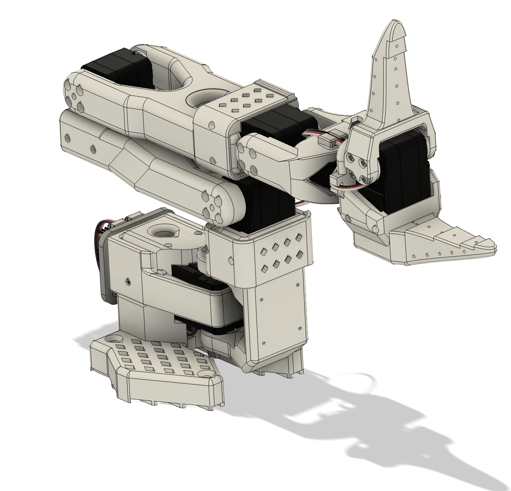
The original “Finger-Tips” end-effector swings to open and close, which is space-inefficient for a simple binary grasp, and prints in brittle PLA. Range of motion in the vertical direction is also limited — at extended distances the gripper would rotate to gain height, which would have ruined the tray-lift task.
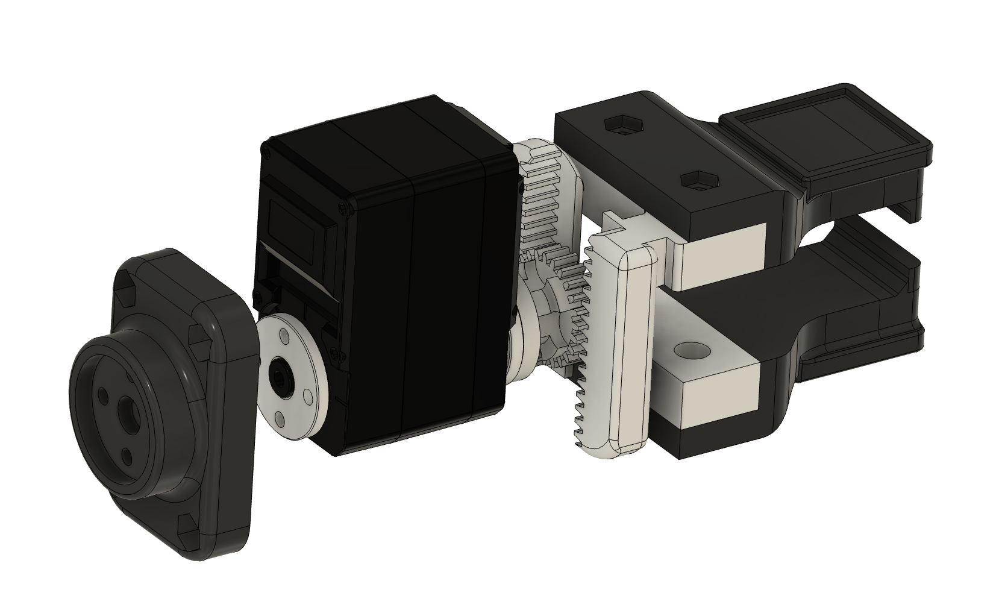
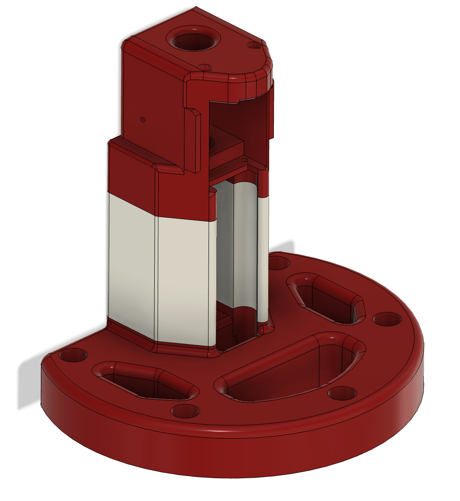
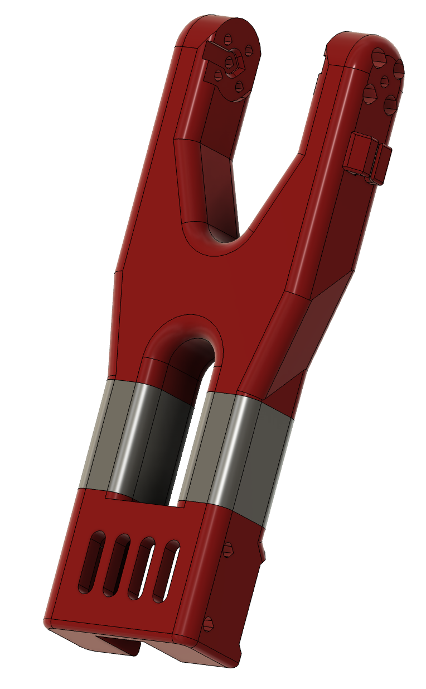
The tray (PLA, 150 mm × 75 mm) carries two slots for 20 mm AprilTag markers 140 mm apart. The markers do double duty as position references and as a tilt gauge via their relative height. Raised 10 mm handles 65 mm high give the grippers a clean target.
A single Intel RealSense D435i provides a 640×480 RGB stream at 30 fps. The D435i’s IR stereo depth was too noisy at this range and was discarded — the entire pipeline runs on the RGB stream alone. Both arm threads consume the same camera frames, simulating two co-located cameras within hardware constraints.
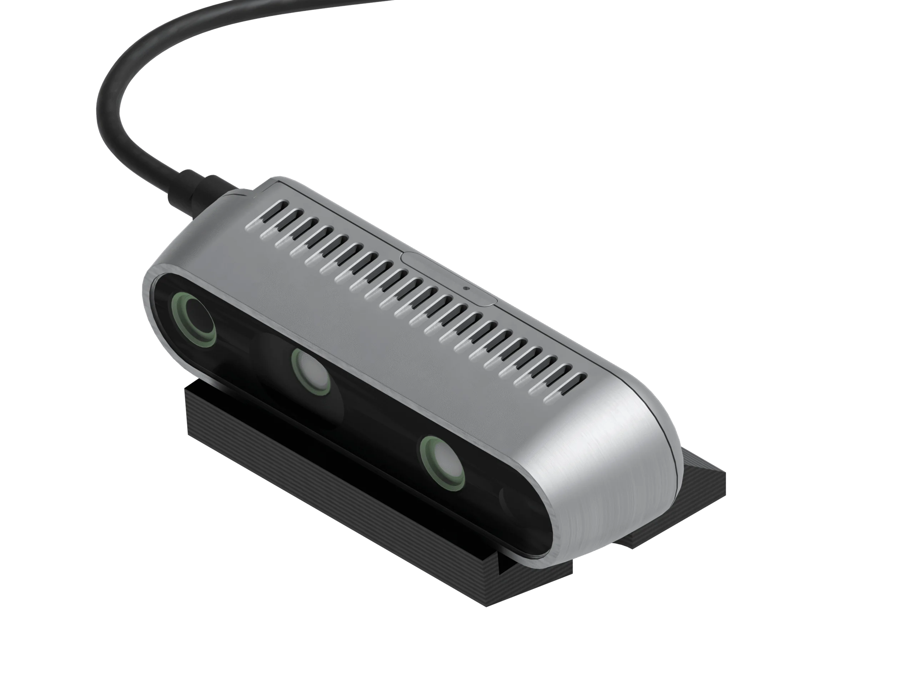
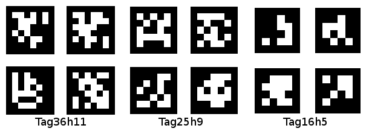
Six AprilTag markers from the Tag16h5 family label the scene: one 40 mm tag on each arm base, one 40 mm tag on each gripper, and two 20 mm tags on opposite sides of the tray. Tag16h5 was chosen because the simpler 4×4 grid stays legible at the small marker sizes our setup demanded. cv2.solvePnP with SOLVEPNP_IPPE_SQUARE against the symmetric corner layout returns 5–10 mm 3D pose accuracy — better than any of the coordination thresholds need.
Each arm has its own natural coordinate frame, so before any task can run, the system has to place each arm’s base relative to the camera. The system detects each base tag for 30 consecutive frames and averages the resulting transforms to suppress per-frame jitter. Because hand-mounted tags rarely sit perfectly vertical, the averaged rotation is then re-orthonormalized with explicit gravity alignment:
Because both arms enforce the same vertical convention, their motion maps share common axes without ever needing an external world frame. Re-running this calibration is also the only step required to move the whole setup to a new location.
Instead of a traditional IK solver, each arm uses a degree-3 polynomial that maps a planar target (x, z) directly to 5 servo angles. Fit once per arm from a manual workspace sweep, evaluated in O(1) at runtime, with a visual-servoing feedback term to close the loop.
Both arms run the same finite-state machine on independent threads. Every transition triggers on what each arm sees — coordination emerges from the shared image, not from any inter-arm message.
Both arms execute the same linear state machine. HOME and PRE_GRASP run synchronized on the main thread, with pre-planned moves that bring both arms into the camera’s view — the only coordinated states in the entire sequence.
From HOVER onward, each arm runs the rest of the chain on its own thread, issues its own motor commands, and transitions on its own visual events. After PRE_GRASP, the only way the arms “know” about each other is through what the camera can see — coordination has to emerge.
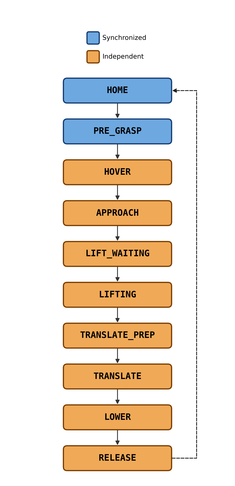
Shared state machine run by both arms — all states after PRE_GRASP run independently per-arm.
50 hardware trials with a water-filled glass on the tray, each starting from a varied position inside the recorded workspace. 37 of 50 trials (74%) ran end-to-end successfully — arms returned home with the tray placed and the glass intact.
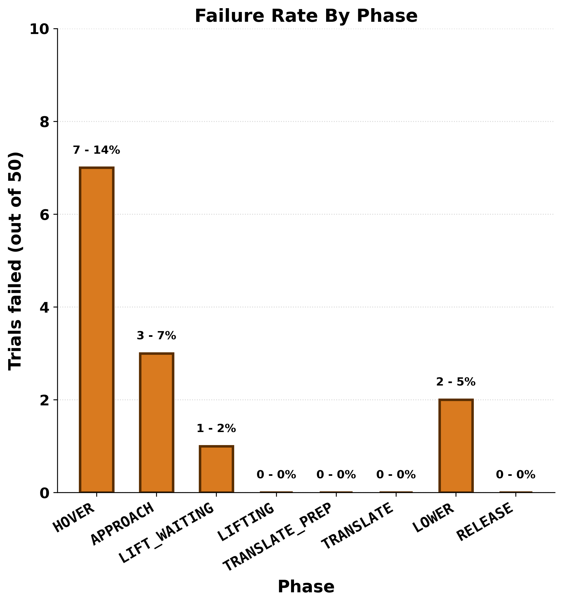
Failures concentrate at HOVER (14%) and APPROACH (7%); LIFTING, TRANSLATE, and RELEASE produced zero failures across every trial that reached them.
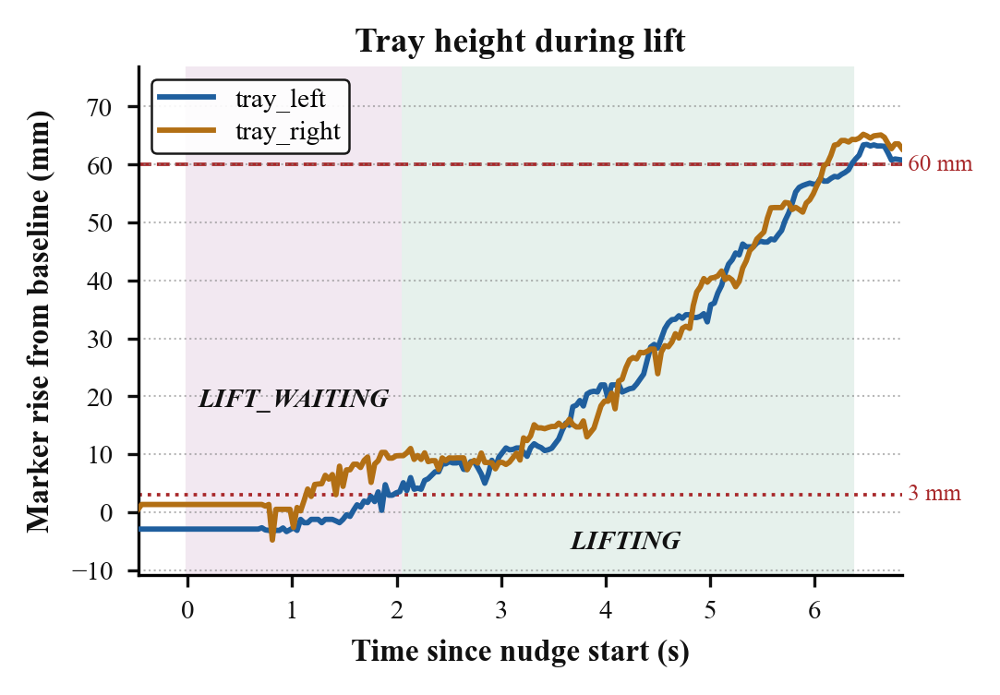
Self-throttling produces a clean reciprocating pattern between arms — max tray tilt ≈ 1 cm (4°), well below the threshold for the glass to slide.
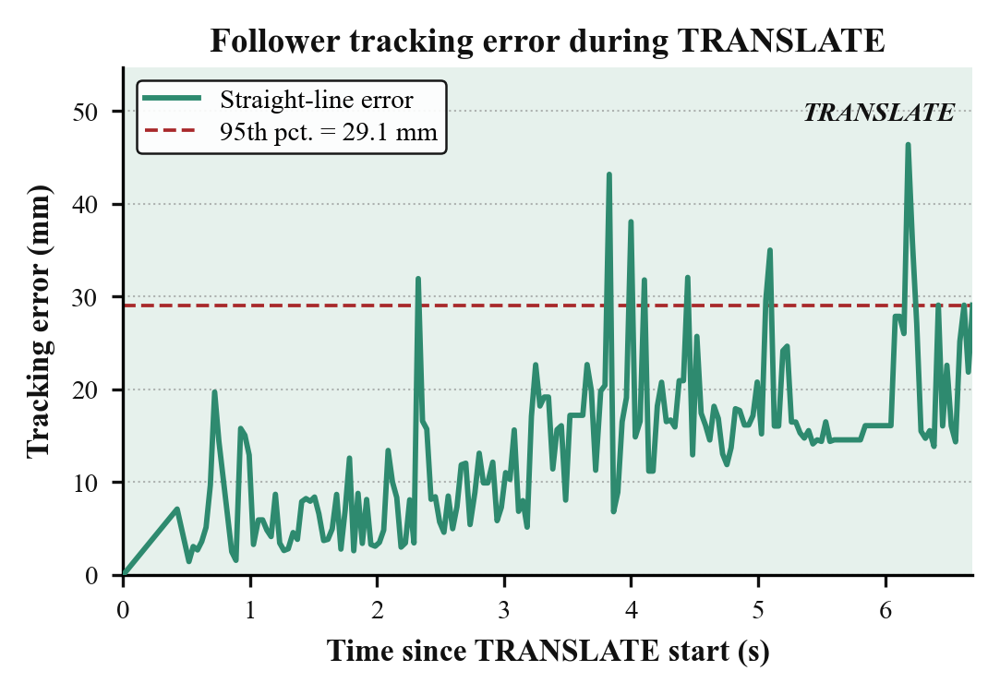
Follower tracks the leader’s gripper through a fixed offset. A strong EMA (α = 0.1) and the compliant TPU gripper tips absorb high marker noise.
This was a two-person project with Jackson Crocker. My focus was on the hardware and perception layers:
solvePnP pose extraction, gravity-aligned base-frame calibration